第10章 分布のグラフ
記述統計はデータの概形を把握する基本ですが、少数の統計量で要約するため、多くの情報量が失われてしまいます。 変数の散らばりをグラフにすることで過度に情報量を損なわずにデータを理解することができます。
まずは、1つの変数がどのように散らばっているのか、どの値を取りやすいのかを理解できるグラフの書き方を学びます。 具体的には、連続変数の場合には
- ヒストグラム
- カーネル密度
を使い、離散変数の場合は
- 棒グラフ
を使います。
## Parsed with column specification:
## cols(
## statea = col_double(),
## stateb = col_double(),
## year = col_double(),
## dependa = col_double(),
## dependb = col_double(),
## demauta = col_double(),
## demautb = col_double(),
## allies = col_double(),
## dispute1 = col_double(),
## logdstab = col_double(),
## lcaprat2 = col_double(),
## smigoabi = col_double(),
## opena = col_double(),
## openb = col_double(),
## minrpwrs = col_double(),
## noncontg = col_double(),
## smldmat = col_double(),
## smldep = col_double(),
## dyadid = col_double()
## )10.1 ヒストグラム
Rの標準作画関数でヒストグラムを作成する場合は、shit()を使います。
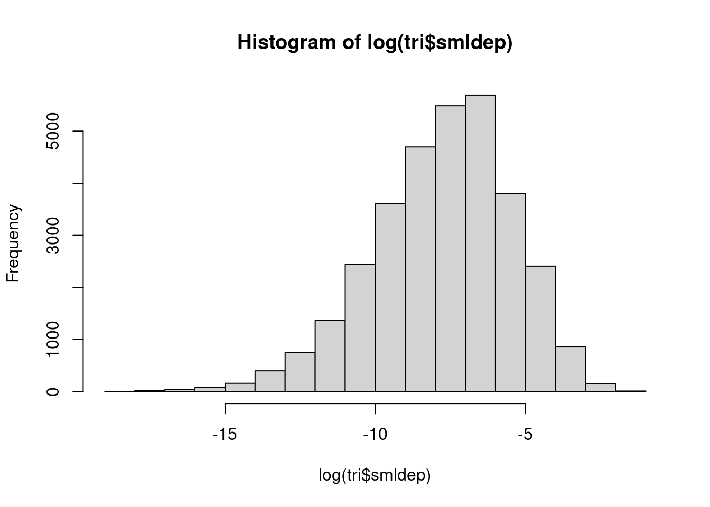
このように、分布が歪んでいる変数の場合、対数を取ることで見やすくなります。
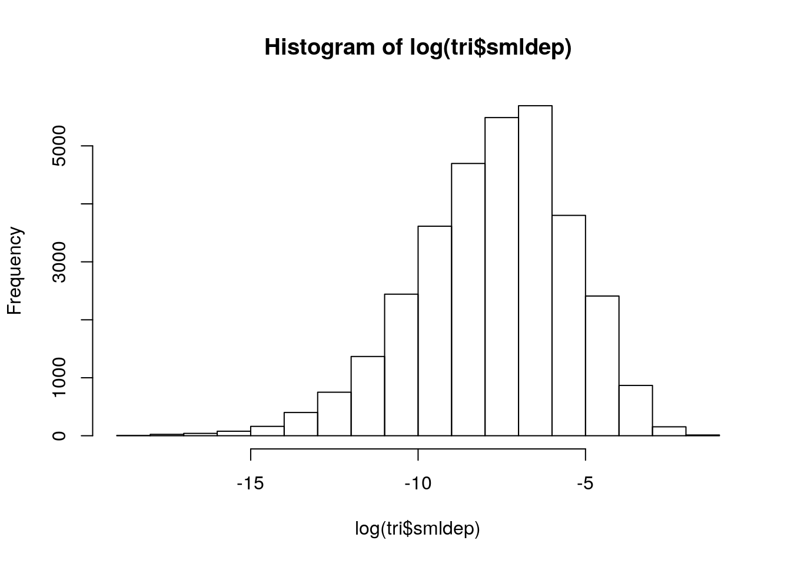
- ただし、対数を取るともともと0だった変数は除外される点に注意して下さい。
breaksというオプションで、ヒストグラムのビン（棒）の数を決めることもできます。
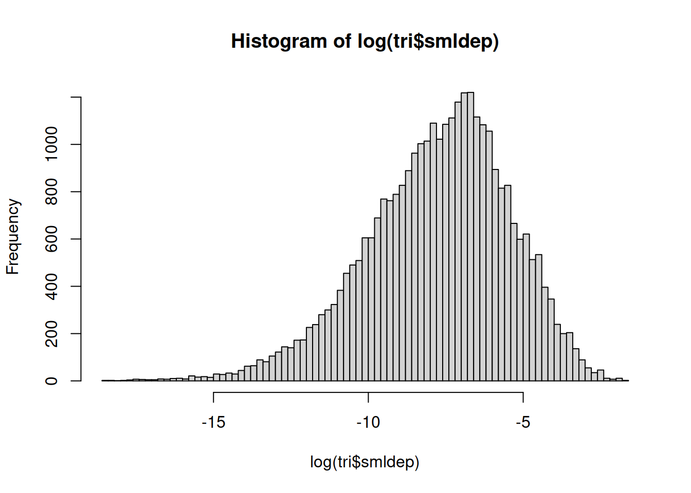
tiduverseではggplot2というパッケージで作図を行います。
ggplot2では、まず、データをggplot()という関数に入力し、さらに+でグラフの内容や表示方法を「重ね合わせ」ていきます。
ヒストグラムは次のように描きます。
## Warning: Transformation introduced infinite values in continuous x-axis## `stat_bin()` using `bins = 30`. Pick better value with `binwidth`.## Warning: Removed 7988 rows containing non-finite values (stat_bin).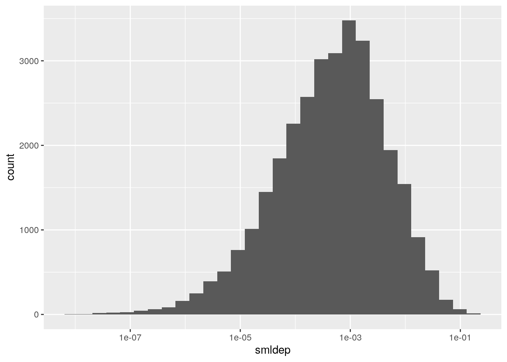
ggplot()でグラフの作成を宣言します。geom_histogrom()でヒストグラムを作成します。aes()は変数を指定する関数です。
scale_x_log10()はx軸を対数スケールにする関数です。
10.2 カーネル密度
カーネル密度とはヒストグラムを「滑らか」にしたものです。
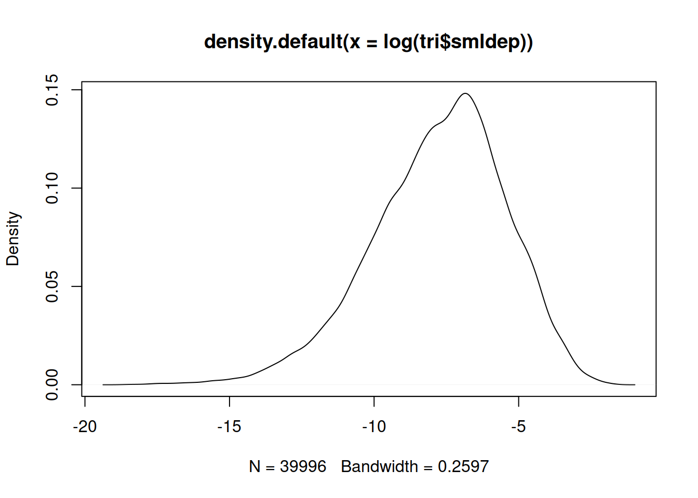
## Warning: Transformation introduced infinite values in continuous x-axis## Warning: Removed 7988 rows containing non-finite values (stat_density).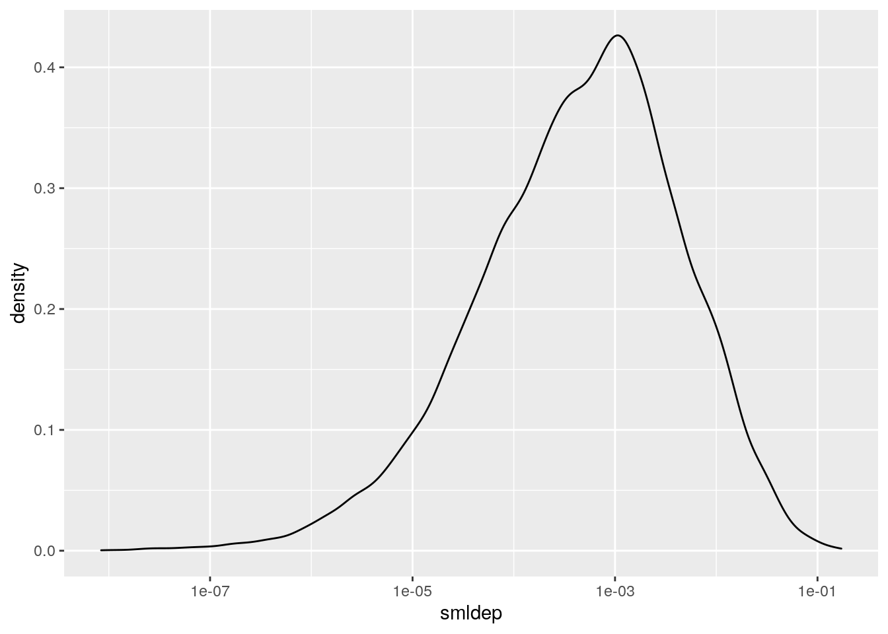
10.3 棒グラフ
棒グラフは離散変数の分布を見るときに使います。

smldmatは二国間の民主主義度を表します。
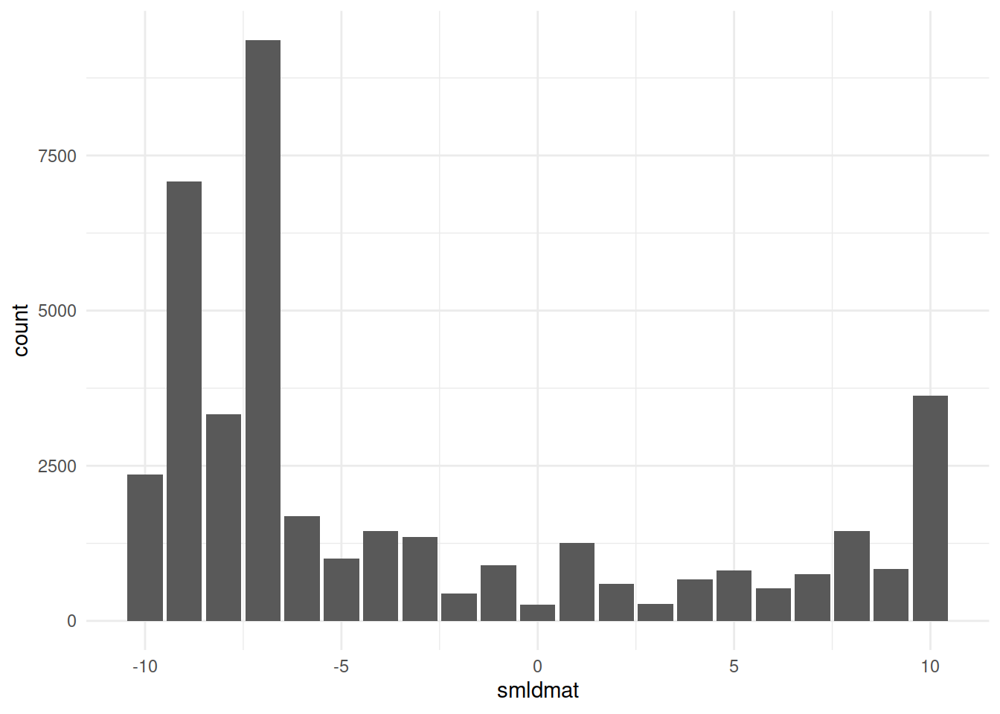
y軸に指定すると反転します。
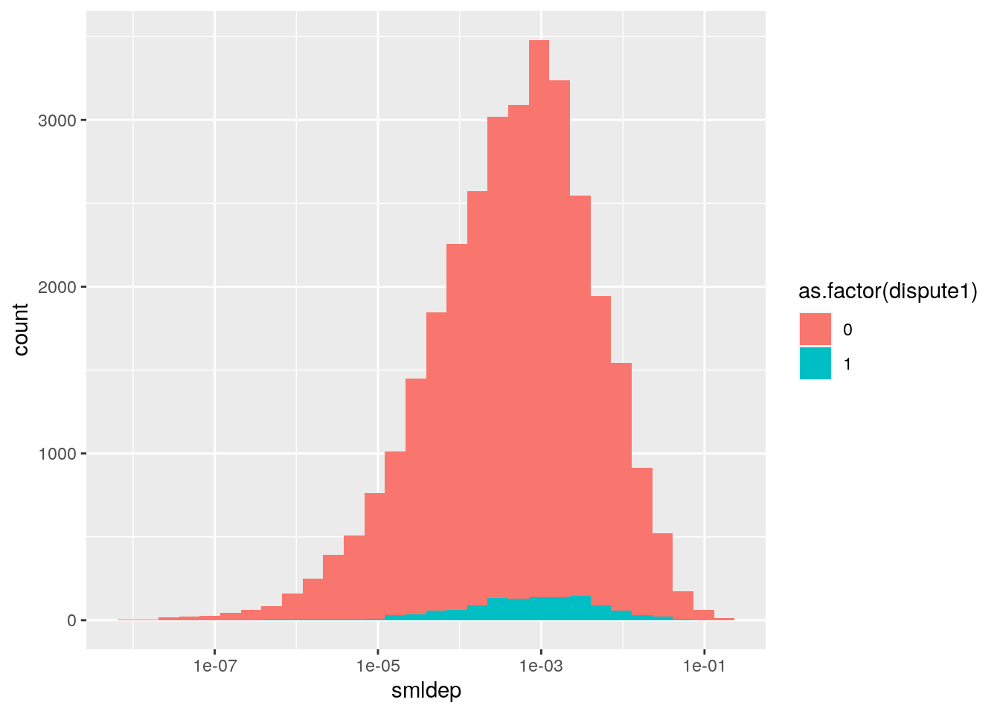
10.4 グループごとの分布
ggplot2ではaes()の中でfillを指定することで、グループごとの分布を見ることができます。
- 今回は紛争の有無を示す
dispute1でグループ分けをしますが、データでは0と1の数値になっているので、as.factor()でカテゴリカル変数に変換します。
## Warning: Transformation introduced infinite values in continuous x-axis## `stat_bin()` using `bins = 30`. Pick better value with `binwidth`.## Warning: Removed 7988 rows containing non-finite values (stat_bin).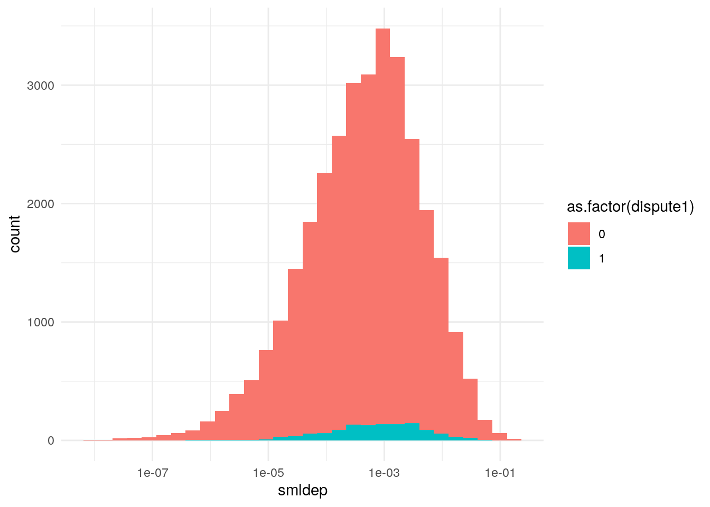
tri %>%
ggplot() +
geom_density(aes(x = smldep, fill = as.factor(dispute1)), alpha = 0.5) +
scale_x_log10()## Warning: Transformation introduced infinite values in continuous x-axis## Warning: Removed 7988 rows containing non-finite values (stat_density).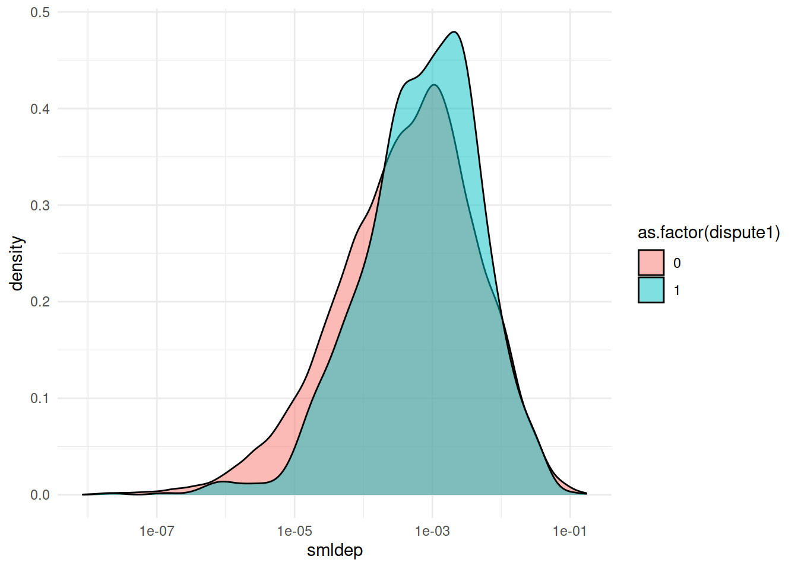
- カーネル密度プロットは
alphaで透過させたほうがかっこいいです。
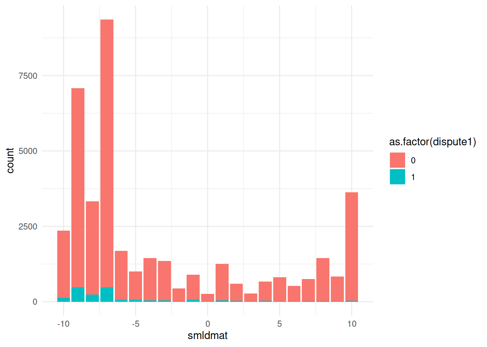
position = "dodge"でグループごとに「すらして」表示します。
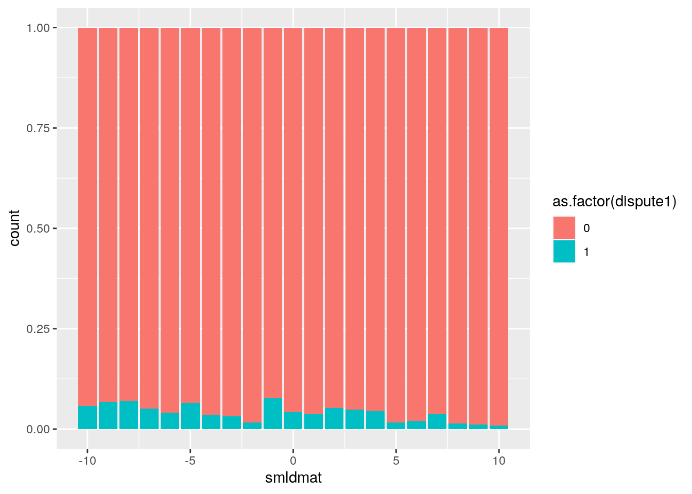
position = "filL"で割合を表示します。
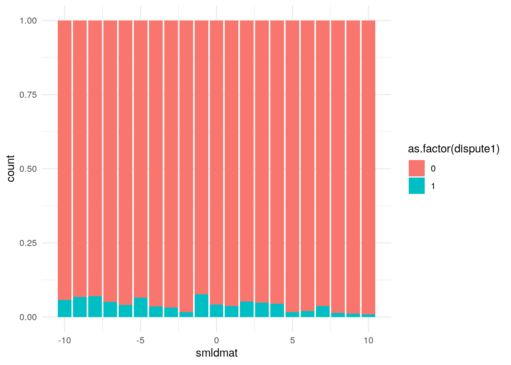